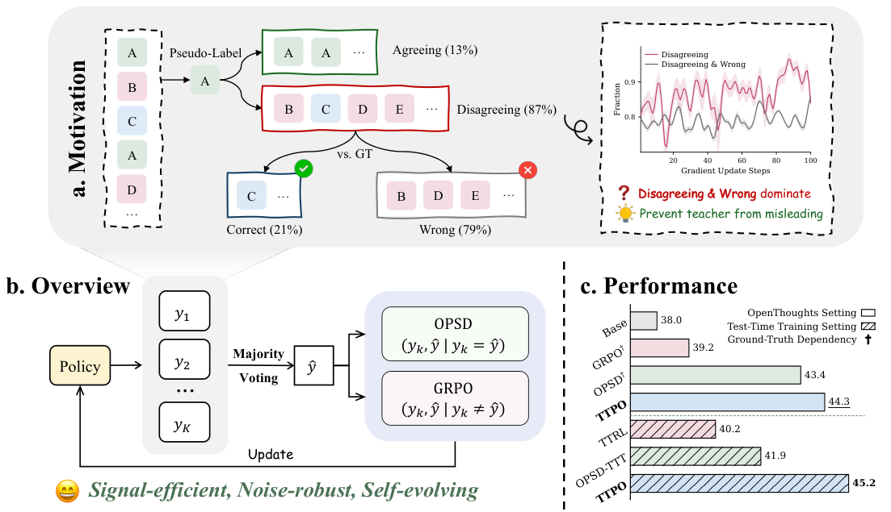
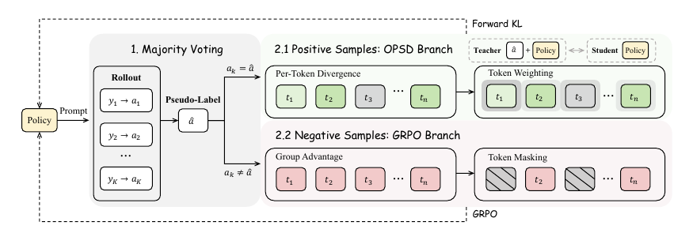

TTPO: Test-Time Policy Optimization from Majority-Vote Pseudo-Labels
TL;DR
- TTPO (arXiv 2608.27448; Aozhe Wang, Zhengxi Lu et al., Zhejiang University + Alibaba) makes test-time training work on problems where the majority vote is usually wrong: on AIME 2026 with Qwen3-1.7B the majority-vote pseudo-label is wrong on ~85% of prompts, yet label-free TTPO lifts that model's three-benchmark TTT average from 38.0% to 45.2%, beating TTRL (40.2) and a self-distillation baseline (41.9).
- The trick is an asymmetric split of the pseudo-label's blast radius: rollouts that agree with the vote get dense on-policy self-distillation (OPSD) from a teacher conditioned on that same answer — safe even when the answer is wrong, because it degenerates into thinking→non-thinking distillation; rollouts that disagree get a GRPO penalty that uses only the fact of disagreement, never the vote's content — and ~79% of disagreeing rollouts are wrong regardless of whether the vote is.
- The surprise result: with the asymmetric objective in place, majority-vote pseudo-labels outperform ground-truth labels for TTT — correct labels on hard problems produce almost no agreeing rollouts, starving the distillation branch, while the vote always splits the group into two usable halves. Self-supervision that tracks the model's current ability beats supervision the model can't yet reach.
Why this matters
Every strong post-training signal this tracker follows — RLVR, on-policy self-distillation, their hybrids — assumes a ground-truth answer exists: the verifier needs it to score, the OPSD teacher needs it as privileged context. Test-time training is exactly the setting where that assumption breaks: the model must improve on the very problems it is being asked to solve, and no label ever arrives.
The known label-free fallback is TTRL: sample a group, take the majority answer as a pseudo-reward, run GRPO. But a scalar reward is one bit per trajectory, and dense distillation — the thing that makes OPSD so sample-efficient — seemed too dangerous to port over: a wrong reward misleads once per trajectory, a wrong teacher misleads at every token. Since pseudo-labels on competition math are wrong for the vast majority of prompts, dense label-free supervision looked infeasible.
TTPO's contribution is showing that the danger is not symmetric across the two halves of the rollout group, and that routing each half to the signal that stays correct under label noise recovers nearly everything: trained without labels, TTPO matches or slightly beats label-supervised OPSD on five competition benchmarks (40.1 vs 39.7 on 1.7B, 58.6 vs 58.4 on 4B, 62.6 vs 61.7 on 8B). For anyone thinking about agents or models that improve during deployment — the core concern of this tracker — that is the interesting boundary being moved: dense self-supervision without any external verifier.
The core idea
Sample K rollouts for a problem, cluster the final answers, call the largest cluster the pseudo-label \( \hat{a} \). This partitions the group into positives \( \mathcal{P} \) (answer ≡ \( \hat{a} \)) and negatives \( \mathcal{N} \) (answer ≢ \( \hat{a} \)).
Now ask: what update stays correct on each side when \( \hat{a} \) is wrong — the common case?
Negatives: the paper's key measurement is that even when the vote is wrong, ~79% of disagreeing rollouts have answers that are neither the vote nor the truth — they are simply wrong. A penalty on a disagreeing rollout uses only "you are not in the majority cluster"; it never consults the vote's content. So penalizing \( \mathcal{N} \) with GRPO is usually right no matter how bad the vote is. This is the negative-learning-from-noisy-labels insight ("what this sample is not" survives label errors) transplanted into RLVR.
Positives: distillation toward the pseudo-label seems doomed when the label is wrong — but the positives, by definition, already produced that answer. The OPSD teacher is the same model conditioned on \( \hat{a} \) as privileged context; for an agreeing rollout, that context matches the rollout's own conclusion, so even under a wrong vote the update reduces to distilling the model's careful (thinking, answer-in-hand) distribution into its unconditioned one — not steering it toward an arbitrary error. The paper's ablation quantifies the floor: pure thinking→non-thinking distillation alone scores 45.7 on AIME26 TTT, so the "corrupted" positive branch never falls below a genuinely useful signal.
The asymmetry, in the authors' framing, minimizes the blast radius: distill everything and one wrong vote corrupts all K trajectories; distill only \( \mathcal{P} \) and penalize \( \mathcal{N} \), and the corruption is confined to the (small, and mostly self-consistent) positive set.

Figure 1 from the paper: the motivating measurement (wrong votes, but disagreeing rollouts wrong anyway), the method sketch, and the headline TTT accuracy.
How it works
The teacher and student are the same policy \( \pi_\theta \) with different prompt prefixes — the teacher sees the pseudo-label, the student does not:
where \( x \) is the problem, \( y_{<t} \) the shared rollout prefix, and \( q_t, p_t \) the teacher/student next-token distributions.
Positive branch — weighted forward KL. Each positive rollout is distilled token-by-token, but not uniformly:
Here \( \hat{H}(t) \) is the student's (min-max normalized) entropy and \( \hat{\Delta}(t) \) the normalized teacher–student KL; the Soft-OR gives weight when either the student is uncertain or confidently disagrees with the teacher, and goes to zero only where the student has already converged.
Negative branch — masked GRPO penalty. Binary rewards (1 if answer matches \( \hat{a} \), else 0) with group-relative advantages make \( A_k<0 \) for negatives:
with mask \( m(t)=\mathbf{1}[s(t)\geq\text{median}] \): only the top-50% of tokens by \( s(t) \) — low-probability and low-entropy, i.e. the model confidently produced something it considers unlikely — get penalized. Because GRPO here acts only on negatives, there is no positive-advantage counterweight to cancel false penalties on locally correct steps, so masking is doing real work (removing it costs up to 4.7 points on BRUMO25).
Combined: \( \mathcal{L}_{\text{TTPO}}=\frac{1}{|\mathcal{B}|}\left(\sum_{k\in\mathcal{P}}\mathcal{L}_{\text{OPSD}}(k)+\lambda\sum_{k\in\mathcal{N}}\mathcal{L}_{\text{GRPO}}(k)\right) \) with \( \lambda=0.1 \).

Figure 2 from the paper: the two branches and their token-level selection mechanisms.
Algorithm: TTPO training (per iteration)
for each unlabeled problem x:
sample K=64 rollouts y_1..y_K ~ π_θ(·|x); extract answers a_k
â ← plurality answer (by mathematical equivalence)
P ← {k : a_k = â}; N ← {k : a_k ≠ â}
select K_train=8 rollouts (50% from P, 50% from N)
teacher forward: q_t ← π_θ(·|[x; â], y_<t) (no grad)
student forward: p_t ← π_θ(·|x, y_<t) (with grad)
# positive branch (OPSD)
w(t) ← Ĥ(t) + Δ̂(t) − Ĥ(t)·Δ̂(t) # soft-OR of entropy & divergence
L_OPSD ← mean over P of (1/T_k) Σ_t w(t)·KL(q_t ∥ p_t)
# negative branch (GRPO)
s(t) ← −log p_t(y_t) · (1 − Ĥ(t)); m(t) ← 1[s(t) ≥ median]
L_GRPO ← −mean over N of (A_k/T_k) Σ_t m(t)·log π_θ(y_t | x, y_<t)
θ ← θ − η ∇(L_OPSD + 0.1·L_GRPO) # LoRA r=64 on all linear layers
Practical footprint: K=64 rollouts per problem (needed for reliable votes at low pass rates), 16k-token generation cap, LoRA-only updates, 100 training steps.
Results
Against labeled methods (OpenThoughts training set, Avg@12 over five competition benchmarks): TTPO without labels vs OPSD/GRPO with labels — 40.1 vs 39.7 (OPSD) and 35.7 (GRPO) on Qwen3-1.7B; 58.6 vs 58.4 on 4B; 62.6 vs 61.7 on 8B. Label-free matches label-supervised, consistently.
Pure TTT (train = test, no labels for anyone): on the AIME26/HMMT26/BRUMO25 average — 1.7B: base 38.0 → TTRL 40.2 → OPSD-TTT 41.9 → TTPO 45.2; 4B: 57.4 → 61.1; 8B: 60.7 → 65.3. TTPO on 4B (61.1) beats the untouched 8B (60.7). With thinking mode disabled at eval, gains reach +25.2 to +36.4 points — the distillation branch is literally installing the thinking-mode behavior into the non-thinking mode.
The ablations tell the story cleanly. Swapping branch assignments: full TTPO 48.9 on AIME26; positive-only FKL 46.7; FKL on everything 46.3; FKL on negatives 43.9; GRPO on positives 37.2; the fully reversed assignment 37.2. Every deviation from "distill agreement, penalize disagreement" loses points, and the reversed design — reinforce what agrees with a mostly-wrong vote, distill the disagreers toward it — is worst.
Ground truth loses to the vote. Replacing pseudo-labels with real answers (same objective) hurts: hard problems yield few or zero agreeing rollouts, so the distillation branch starves and group advantages flatten toward zero. And the self-evolution plot shows why the ceiling is soft: as training proceeds, Avg@12 climbs toward the base model's Maj@12, and Maj@12 itself rises — better single samples produce better votes, which raise the training signal for the next step.
How it connects
- Demystifying RL Post-Training (2608.24949, also tracked this week) argues sparse RLVR mostly amplifies behaviors the base model can already sample and dense process rewards are needed to escape the exploration bottleneck. TTPO is the label-free version of the same conclusion: its dense branch (OPSD) does the heavy lifting, and its self-evolution loop is exactly "amplify what the model can already sample" — which is why it works within the majority-vote regime rather than learning genuinely unreachable behaviors.
- Self-OPD (tracked today): on-policy distillation without a teacher for flow-matching models — the same "manufacture privileged supervision from your own exploration" move in a different modality.
- CLR: Test-Time Scaling via Solve/Falsify Asymmetry (2608.11994): another method built on an asymmetry between confirming and rejecting candidate answers; TTPO's "disagreement is reliable even when the vote isn't" is the training-time cousin.
- MOPD / Open-MOPD / OPD-Dual-Nature (tracked): the OPD line this branch borrows its forward-KL machinery from; TTPO shows that line survives losing the ground-truth conditioning.
Critical take
The evaluation protocol is generous: peak performance across checkpoints, on benchmarks that in the TTT setting are the training set, with Avg@12 at temperature 1.0 — some of the headline gap over baselines (which get the same treatment) is fine, but the absolute numbers carry selection noise. The Table-1 gains on 4B/8B over labeled OPSD (58.6 vs 58.4, 62.6 vs 61.7) are within what I'd expect from checkpoint selection alone; the TTT-setting gaps are the real evidence.
The 79% statistic is doing all the load-bearing work, and it is a property of competition math with a small model — a regime where most rollouts are wrong. On easier distributions the negative set shrinks and contains proportionally more genuinely-correct rollouts penalized for disagreeing with a wrong vote (the correct-answer-extinction failure mode the paper itself cites via Lin et al.). TTPO has no mechanism to detect that regime; \( \lambda \) is fixed. Cost is also nontrivial: 64 rollouts per problem is a big multiple of inference — the payoff only amortizes because the improved model then answers in one sample (and eventually beats its own starting Maj@12, which pure voting cannot).
What I like most is the diagnosis, not the recipe: the paper localizes where pseudo-label noise enters each objective (teacher content vs membership bit) and routes updates accordingly. That analysis style should transfer to agentic TTT — where "majority vote" becomes "majority outcome across trajectories" and the same asymmetry plausibly holds. Nobody has done that paper yet; it's an obvious next thing to watch for.
If you remember three things
- Wrong votes still supervise: ~85% wrong pseudo-labels, but ~79% of vote-disagreeing rollouts are wrong regardless — so penalize disagreement (content-free) and distill agreement (self-consistent), and both updates survive label noise.
- Label-free matches labeled: TTPO ≈ ground-truth OPSD on five competition benchmarks, and in pure TTT lifts Qwen3-1.7B 38.0→45.2, with the 4B model overtaking the 8B base.
- The vote beats the truth for TTT: ground-truth labels starve both branches on problems the model can't yet solve; majority votes track current ability, keep both branches fed, and rise as the model improves — supervision difficulty auto-calibrated to capability.